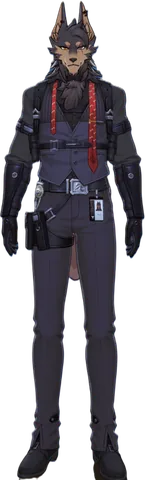
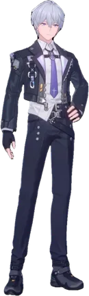
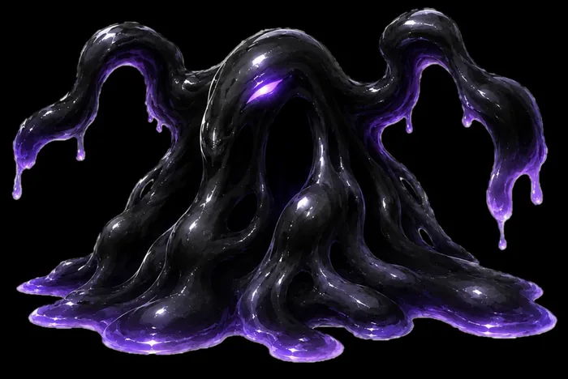

해안 동굴
빛을 꺾어 길을 열고, 그림자를 피해 나아가는 퍼즐.
🖱 키보드·마우스 조작이 필요합니다 — PC로 접속해 주세요.
「이환」은 초자연적 존재 '이상'과 인간의 공존을 다루는 오픈월드 RPG입니다. 게임 내 '이상 의뢰' 콘텐츠를 기반으로, '미지의 해안' 구역에 들어갈 신규 이상 의뢰 「해안 동굴」을 창작해 보았습니다.
플레이어는 광원으로부터 조사되는 빛을
거울로 빛의 방향을 꺾어 어두운 동굴에 길을 내고,
어둠 속에서 다가오는 '그림자'를 피해
목표 지점까지 빛을 연결해 나아가야 합니다.
「이환」의 시점은 3D 숄더뷰입니다. 다만 퍼즐 구조를 직관적으로 전달하기 위해,
기획서와 프로토타입에서는 2D 탑뷰 형식으로 단순화하여 구현했습니다.
이 웹사이트는 위 기획의 재미와 밸런스를 검증하기 위한 프로토타입 테스트 사이트입니다.
시놉시스
'미지의 해안'에 자리한 동굴은 천장 틈으로 든 햇빛이 아름다워 관광지로 개방되었고, 빛을 동굴 곳곳에 퍼뜨리기 위해 거울이 설치되었습니다.
그러나 이곳은 어둠 그 자체인 '장소 이상'이 잠들어 있던 영역이었습니다. 인간이 들인 빛이 어둠을 깨웠고, 이상은 자신을 흩어버리는 거울을 파괴했습니다. 빛이 끊긴 동굴엔 어둠이 차오르고, 그 어둠이 뻗어낸 형상들에 사람들이 삼켜졌습니다.
플레이어의 임무는 거울을 다시 설치해 빛의 궤적을 복구하고 잠식된 동굴을 되돌리는 것입니다.
게임 규칙
핵심 기믹
빛 반사 퍼즐 [공간 장악]
거울 각도를 조정해 광원의 빛을 목표 지점까지 연결합니다. 빛이 지나간 자리는 어둠이 걷혀 안전한 길이 됩니다.
빛으로 적 퇴치 [생존 수단]
일반 공격이 통하지 않는 '그림자'는 오직 빛으로만 물리칠 수 있습니다.
플레이어블 캐릭터
「이환」은 캐릭터마다 키와 이동 속력이 달라 플레이 경험에 차이가 생깁니다.


가장 빠른 '스키아', 주인공 '감정사', 가장 느린 '사키리'를 골라 밸런스를 검증합니다.
퍼즐 오브젝트
| 오브젝트 | 게임 내 표기 | 설명 |
|---|---|---|
| 광원 | 노란 마름모 | 퍼즐의 시작 지점. 안전지대로 기능하며, E로 빛 방향을 상·하·좌·우로 바꿉니다. |
| 중간 지점 | 어두운 마름모 | 빛이 닿으면 활성화됩니다. 활성화 후에는 세이브 포인트이자 안전지대가 되며, E로 빛 방향을 상·하·좌·우로 바꿉니다. |
| 목표 지점 | 초록 깃발 | 빛을 도달시킨 뒤 E로 상호작용하면 그 단계를 클리어합니다. |
| 거울 거치대 | 청록 마름모 | 빛이 닿은 거치대에 E로 거울을 놓고 마우스로 각도를 조정해 빛을 꺾습니다. 거울면에 빛이 닿아야 반사됩니다. |
| 보조 거울 거치대 | 금색 마름모 | 거울을 놓고 각도를 조정할 수 있지만 정답 경로에는 필요하지 않은 거치대로, 어느 길이 정답인지 헷갈리게 하는 역할을 합니다. |
| 방향 고정 거치대 | 🔒 표시 | 각도를 조정할 수 없고 정해진 방향으로만 빛을 반사합니다. |
| 빛 궤적 | 노란 선 | 한 번에 최대 30m까지 뻗으며, 궤적 좌우 0.6m 범위의 어둠은 일시적으로 정화됩니다. |
위협 ① 어둠 — 자유로운 이동을 제약하는 환경 요소
빛이 닿지 않는 보라색 칸에 머물면, 머문 시간에 따라 패널티가 부여됩니다.
| 체류 시간 | 화면 | 효과 |
|---|---|---|
| ~2.5초 | 경고 단계 — 이동·시야 패널티는 없음 | |
| 2.5~5.5초 | 이동 속력 75% · 시야 축소 | |
| 5.5~9초 | 이동 속력 50% · 시야 크게 축소 | |
| 9초~ | 게임 오버 — 마지막 저장 시점으로 초기화 |
먼저 빛을 연결해 길을 만든 뒤 그 위로 이동하세요.
위협 ② 그림자 — 접촉 시 게임 오버되는 동적 장애물

| 상태 | 속력 | 특징 |
|---|---|---|
| 순찰 | 1.5 m/s | 전방 반경 9m · 90° 범위의 부채꼴 영역만 인식 |
| 추격 | 3.0 m/s | 발견하면 쫓아옴 |
| 돌진 | 6.0 m/s | 발동 순간의 플레이어 위치로 2초간 직선 이동 |
-
'그림자'는 어둠 구역에 들어온 캐릭터가 시야 범위에 존재하는지 살펴 봅니다. 옆으로 우회해 지나가세요.
-
'그림자'가 캐릭터를 발견하면 추격하기 시작합니다. Shift 회피로 거리를 벌려 도망치세요. 안전지대(광원·활성 중간 지점)로 들어가면 추격이 풀립니다.⚠ 주의! 한 번 발각되면 빛 궤적 주변으로 들어가도 계속 쫓아옵니다. 반드시 안전지대로 들어가야 추격이 해제됩니다.
-
돌진은 발동한 순간의 캐릭터 위치로 직진하므로 돌진 방향의 수직으로 회피하세요.
-
'그림자'를 퇴치하려면 빛을 2초 동안 계속 맞혀야 합니다. 다만 그림자는 빛에 닿으면 빛 궤적의 수직 방향으로 빠져나가려 하므로, 달아나는 그림자를 따라 계속해서 조준해야 합니다.
일부 데모를 불러오지 못했습니다 — 위 표와 설명을 참고해 주세요.
게임 조작법
데모를 불러오지 못했습니다 — 아래 표를 참고해 주세요.
| 입력 | 동작 |
|---|---|
| WASD / 방향키 | 이동 |
| Shift | 회피 2m (0.5초 내 2회 사용 시 0.5초 쿨타임) |
| E | 오브젝트와 상호작용 |
| 광원 — 점등, 빛 방향 전환 | |
| 중간 지점 — 활성화, 빛 방향 전환 | |
| 거울 거치대 — 거울 배치, 각도 조정 시작 | |
| 보조 거치대 — 거울 배치, 각도 조정 시작 | |
| 목표 지점 — 빛 연결 시 클리어 | |
| 마우스 이동 | 거울 각도 조준 |
| 마우스 클릭 또는 E | 조준한 각도로 확정 |
| P | 일시정지 |
| R | 마지막 저장 지점부터 다시 |
튜닝 패널은 밸런스 실험용 도구이므로, 첫 플레이는 값을 바꾸지 않은 기본 상태로 해보시길 권장합니다.
(값을 바꿨다면 패널의 '기본값 복원'으로 되돌릴 수 있습니다)
튜닝 패널
테스트 플레이 화면 오른쪽에는 이동 속력·빛·어둠·그림자 등 밸런스 수치를 실시간으로 바꿔볼 수 있는 튜닝 패널이 있습니다. 슬라이더를 움직이면 게임에 곧바로 반영됩니다.
데모를 불러오지 못했습니다 — 게임 화면 오른쪽 패널에서 직접 확인해 주세요.
맵 에디터 활용법
격자에 바닥을 칠하고 오브젝트를 배치해 나만의 맵을 만들 수 있습니다. 완성한 맵은 저장 후 바로 플레이하거나, 링크 하나로 다른 사람과 공유할 수 있습니다.
데모를 불러오지 못했습니다 — 에디터에서 직접 확인해 주세요.
- 격자에 바닥 칠하기 (드래그)
- 팔레트에서 광원·거치대·목표 등 오브젝트 배치
- '저장 후 플레이 ▶'로 바로 플레이
- '공유 링크 복사' — 링크만 보내면 누구든 즉시 플레이